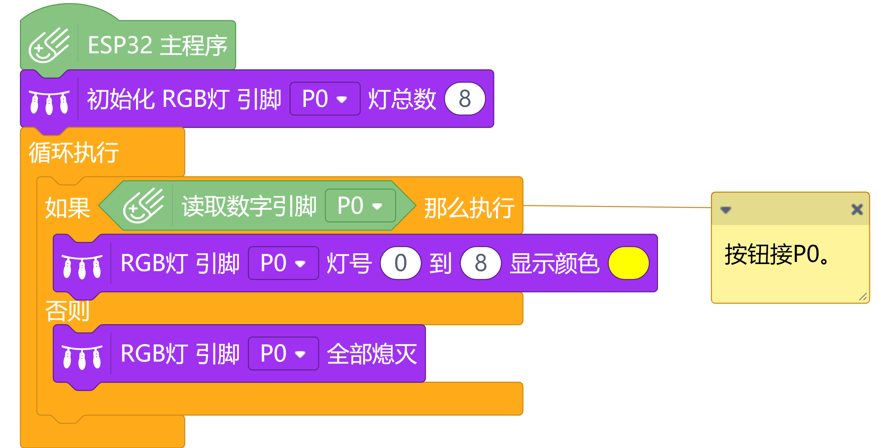
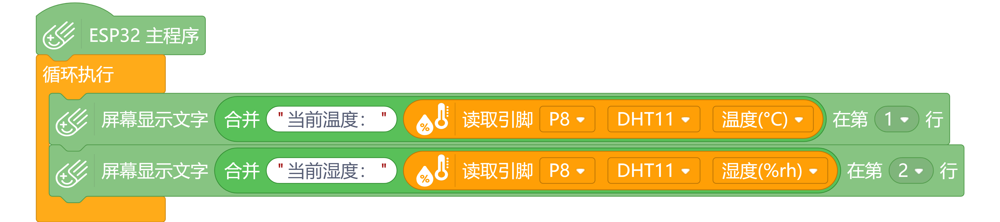
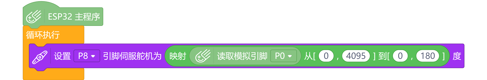

第160篇 日记
2026年02月03日 阴 Tue.
26/02创客培训日记：第二天
今天上午，我和昨天一样，来到九江外国语学校里面的Jiujiang AI Science And Technology Innovation Base.进入教室后，也是和昨天一样的流程。
我们的硬件中，有一个类似于按钮的引脚，它用于检测按钮是否被按下。它可以用数字引脚和模拟引脚来检测按钮状态。数字引脚的值为0或1，分别表示按钮未被按下和按钮被按下。模拟引脚的值在0到4095之间变化，表示按钮被按下的程度。
杨老师说：“我们可以通过读取按钮引脚的值来判断按钮是否被按下。然后你们要写一个程序，就是检测这个按钮是否被按下，如果按钮被按下，就点亮LED灯，这个LED灯可以用灯带，只要在‘模块’中点击显示器选项卡，找到这个LED灯带（其实这种灯带也是一种显示器）。”
于是，我们写了一个程序：
杨老师见我们把按钮程序写好了，就让我们尝试使用温湿度传感器。他告诉我们，温湿度传感器可以测量环境的温度和湿度。
我们可以通过读取温湿度传感器的值来获取当前的温度和湿度信息。然后我们可以把这些信息显示在掌控板的屏幕上，或者通过串口输出到电脑上。
我们写了一个程序，读取温湿度传感器的值，并显示在掌控板的屏幕上：
杨老师说：“舵机模块是一种可以控制旋转角度的设备。我们可以通过编程来控制舵机的旋转，从而实现一些有趣的功能:读取旋钮的角度，然后让舵机也旋转到对应的角度，不过这里要用到映射。”
我们写了一个程序，读取旋钮的角度，并控制舵机旋转到对应的角度：
今天的创客培训让我学到了很多关于ESP32掌控板的知识，包括如何使用按钮引脚、温湿度传感器和舵机模块。这些都是非常有趣的功能，我很期待在接下来的培训中学习更多的内容。